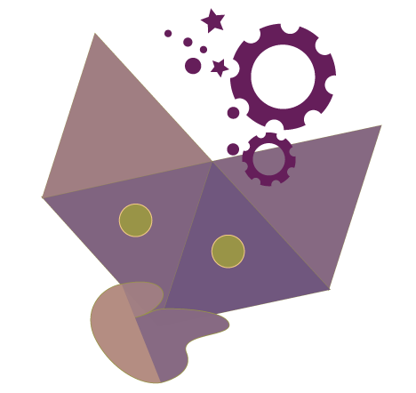
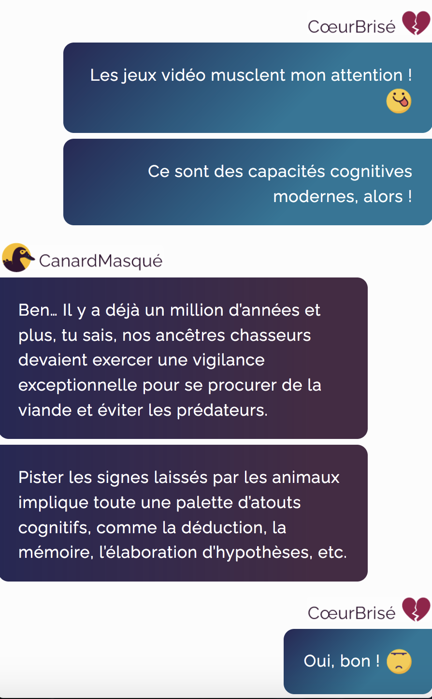

Doré Mifa Sciences

Questionner le monde
L'enseignement de Questionner le monde repose sur l'expérimentation directe et la manipulation : une matière typiquement hors de portée du numérique.
La narration permet néanmoins de contourner l'approche expérimentale directe en racontant les questionnements et les expériences des personnages : les histoires de Doré et Mifa viennent ainsi en complément des manipulations et observations faites à l'école.
Niveau
Les épisodes réalisés couvrent les attendus du cycle 2 des notions abordées, donc plutôt à destination d'élèves de CE2. Pour des lecteurs vraiment débutants, des épisodes plus courts et/ou une répartition différente des notions entre les épisodes seraient préférables.
Documentation, définition d'un fil rouge et écriture du scénario
Coordination de la relecture éditoriale du scénario
Réalisation des visuels
Conception de la capsule html-css-js
Coordination de la relecture finale avec visuels
Educlever, 2020-2022
La minute de Canard masqué

Transversalité
Les épisodes du Canard masqué ont vocation à présenter des notions sous une forme dialoguée, humoristique, et à éveiller la curiosité…
Ces échanges permettent en effet d'aborder des thématiques transverses qui font appel à des notions extraites de plusieurs matières. Ils ne visent pas l'exhaustivité des notions évoquées mais leur mise en lien et jouent avec le format des messages et du dialogue.
Niveau
Destinés à des publics de cycles 4 et 5, ces épisodes mettent en perspective des atomes de savoirs divers issus de plusieurs matières.
Documentation, définition d'un fil rouge et écriture du scénario
Organisation d'ateliers d'écriture collaborative avec l'équipe édito
Suivi et coordination de la relecture éditoriale
Réalisation des visuels
Conception de la capsule html-css-js
Coordination de la relecture éditoriale
Educlever, 2020-2022